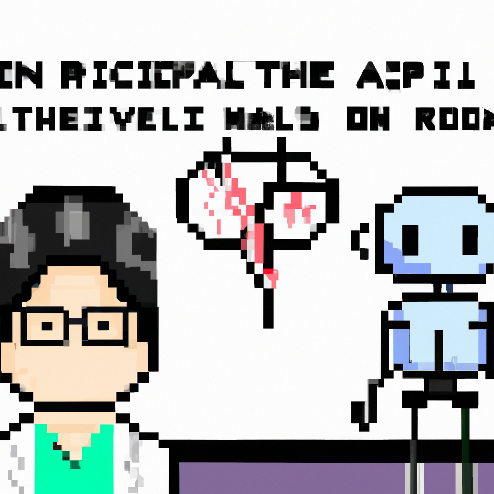

Why AI will never replace the radiologist
The rise of artificial intelligence (AI) has brought about a significant shift in various industries, with healthcare being one of the most impacted. Among the areas where AI and machine learning have made substantial inroads is radiology. However, as a Python instructor with a focus on machine learning, I firmly believe that AI will never replace the radiologist. Here's why.
Firstly, radiology is more than just image interpretation. A significant part of a radiologist's job involves interacting with patients, understanding their medical history, and providing a compassionate human touch. An AI, no matter how sophisticated, lacks the ability to understand, empathize, and connect with patients on a human level.
Secondly, while AI excels in pattern recognition within the data it has been trained on, it struggles with scenarios outside its training data. Radiologists, on the other hand, use their years of training and experience to handle a wide variety of cases, including rare and complex ones. They can recognize when something doesn't fit the pattern and make decisions based on a holistic understanding of the patient's situation.
Thirdly, ethical considerations also come into play. When it comes to making critical decisions about a patient's health, accountability is crucial. If an AI system makes an error, who is held responsible? The developers who built the system? The radiologists who used it? These ethical dilemmas pose significant challenges to the complete replacement of radiologists by AI.
Lastly, AI can certainly aid radiologists by automating routine tasks and reducing their workload, but it cannot replace the intuition, judgment, and critical thinking skills of a human professional.
In conclusion, while AI and machine learning have immense potential to transform radiology by making it more efficient and accurate, they are tools that can augment human capabilities, not replace them. The future of radiology, in my opinion, lies in the synergistic collaboration between AI and human expertise.